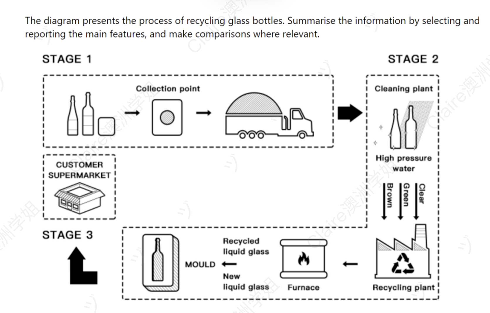

Process of Recycling Glass Bottles
动态类 流程图（工业循环流程） 修改日期：2026-04-23
| 评分维度 | 修改前 | 修改后 | 变化 | 说明 |
|---|---|---|---|---|
| Task Achievement (TA) | 6.0 | 7.5 | +1.5 | Overview 完整覆盖三阶段 + 显性点出循环性；补充图中 truck / customer supermarkets 等视觉细节；末段 "the cycle begins anew" 与 Overview "completing a full cycle" 形成首尾闭环。 |
| Coherence and Cohesion (CC) | 6.5 | 7.5 | +1.0 | 统一使用 "In the first stage / In the final stage" 阶段标识，与 Overview 的 "three main stages" 形成内部呼应；段内 where 从句、并列结构压缩信息密度。 |
| Lexical Resource (LR) | 6.0 | 7.0 | +1.0 | 引入 sorted by colour, melted in a furnace, poured into moulds, shaped into, freshly made bottles 等精准搭配；消除 undergo the furnace, commercial items 等模糊用词。 |
| Grammatical Range and Accuracy (GRA) | 6.0 | 7.5 | +1.5 | 零语法错误；运用被动语态、分词状语（before being transported）、where 从句、冒号 + 并列名词短语等多样句式；修复 sentence fragment、comma splice、介词错误。 |
题目原文：The diagram presents the process of recycling glass bottles.
Summarise the information by selecting and reporting the main features, and make comparisons where relevant.

The flow chart illustrates the main steps involved in the process of recycling glass bottles.
15 wordsOverall there are three main stages in the process of making glass bottles and recycling. Beginning with the collection of the bottles, then they are cleaned and reshaped, finally, these bottles are recycled and sold in supermarkets.
37 wordsIn the first stage of the whole process, the glass bottles are gathered at a collection point before being transported to the cleaning plant. Following this, these bottles are cleaned with high-pressure water and are separated into different colors: clear, green and brown.
43 wordsSubsequently, after the bottles of three colors are processed in the recycling plant, they undergo the furnace where they are transformed into liquid glass. Next, both recycled and new liquid glass are poured in moulds to form their final shape. Once they are moulded, they ultimately become commercial items again and are sold to customers in supermarkets.
57 words开头段（Introduction / Paraphrase）
原因：保留用户原有结构，仅做最小改动——压缩冗余、强化用词精准度，并通过 stages 与下一段关键词形成 paraphrase 之外的内部呼应。
概述段（Overview）⚠️ 本段需较大幅度重写
⚠️ 此段存在两类核心问题：① "Beginning with..." 是分词短语不能独立成句（sentence fragment），后续用三个逗号连接三个分句构成 comma splice；② 未点明流程的循环性（图中明显呈现 customer supermarket → 回收 → 再回到 customer supermarket 的循环结构）。必须整段重写。
原文中的具体错误：原因：(1) 使用流程图固定 Overview 结构 "Overall, ... three main stages: ..."（与 Life Cycle of Salmon 模板一致，沿用已固化的流程图 Overview 模板）；(2) 用冒号 + 三个并列名词短语整齐覆盖三阶段；(3) 末尾 "thus completing a full cycle" 显性点出循环性，呼应图中 customer supermarket 的回流箭头——直接触发 TA 高分要素；(4) 消除所有语法错误。
主体段一（Body Paragraph 1）— Stage 1 & 2：收集与清洗分类
原因：保留用户原有结构和衔接序列（In the first stage / Following this），重点在三方面优化——(1) 补充图中遗漏的视觉细节（customer supermarkets 来源、truck 运输方式）；(2) 精准化用词（cleaned → washed、separated into different colors → sorted by colour into three categories）；(3) 消除冗余 are，使并列结构更整齐。
主体段二（Body Paragraph 2）— Stage 3：熔化、塑形与回流
⚠️ 本段存在多处用词搭配错误和介词错误，需要较大幅度修改。
原文中的具体错误：原因：(1) 用 "In the final stage" 替代冗余的 "Subsequently, after..."，与上一段 "In the first stage" 形成整齐的阶段序列；(2) "are sent to the recycling plant, where they are melted in a furnace" 用 where 从句串起两个动作，比原文两个独立分句更流畅；(3) 修复所有介词和搭配错误；(4) 结尾 "the cycle begins anew" 显性点明循环性，与 Overview "completing a full cycle" 首尾呼应。
内容与结构建议
修改统计
本次修改在保留用户"首段 + Overview + 两段主体"良好结构基础上，重点完成四方面提升：(1) 重写 Overview——修复 sentence fragment 和 comma splice，并显性点明循环性；(2) 统一阶段标识——用 "In the first stage / In the final stage" 替代 Subsequently 等普通衔接词，与 Overview 中 "three main stages" 形成内部呼应；(3) 精准化动词搭配——修复 "undergo the furnace" 和 "poured in moulds" 等典型搭配错误；(4) 末段呼应循环性——以 "the cycle begins anew" 收尾，与 Overview "completing a full cycle" 形成首尾闭环，与 Life Cycle of Salmon 形成同类题型的统一模板。
The flow chart illustrates the main stages involved in recycling used glass bottles.
13 wordsOverall, the recycling process involves three main stages: the collection of used bottles from supermarkets, their cleaning and sorting at the cleaning plant, and their reprocessing at the recycling plant before the finished products are returned to consumers, thus completing a full cycle.
43 wordsIn the first stage, used glass bottles are gathered at a collection point, typically from customer supermarkets, before being transported by truck to the cleaning plant. Following this, the bottles are washed with high-pressure water and sorted by colour into three categories: clear, green and brown.
46 wordsIn the final stage, the sorted bottles are sent to the recycling plant, where they are melted in a furnace and transformed into liquid glass. This recycled liquid is then combined with new liquid glass and poured into moulds to be shaped into new bottles. Finally, the freshly made bottles are returned to customer supermarkets for resale, and the cycle begins anew.
62 words